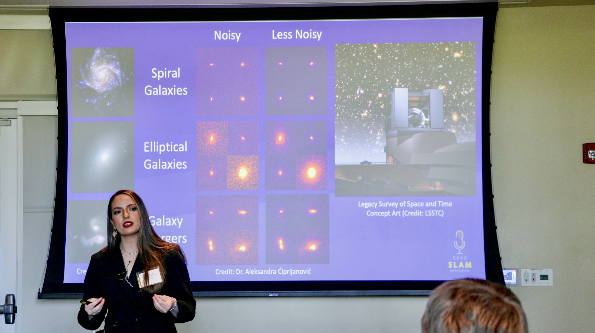
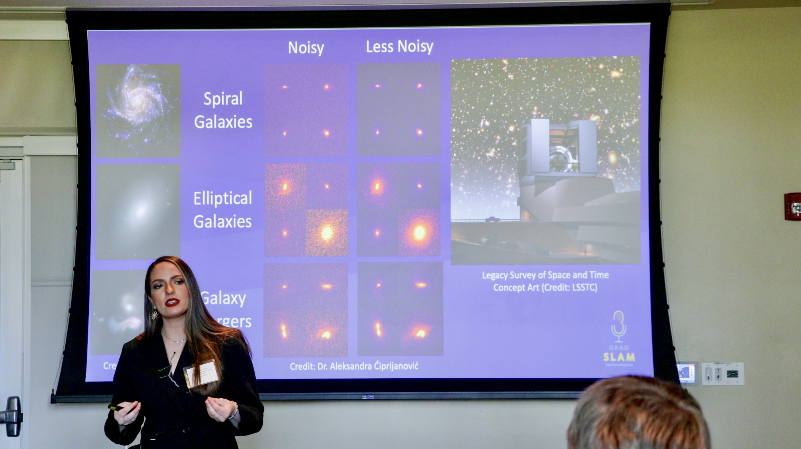

Deep Skies Lab; University of California, Riverside
Advisor: Bahram Mobasher; Research Mentors: Aleksandra Ćiprijanović, Dr. Brian Nord
My graduate research has focused on harnessing the power of deep neural networks to tackle the substantial challenges posed by the massive data volumes anticipated from upcoming surveys like the Vera C. Rubin Observatory Legacy Survey of Space and Time (LSST). I have been investigating the use of Convolutional Neural Networks (as well as Bayesian Neural Networks) and transfer learning techniques to classify the morphologies of galaxies in simulated LSST image data releases. By mimicking realistic observational conditions, including varying levels of observational noise, this project aims to enhance our understanding of the impact of noise on classification accuracy. Initial findings reveal that the performance of standard networks trained on high-noise early data releases can substantially degrade when tested on subsequent lower-noise data releases. However, we have found that transfer learning techniques can significantly improve model performance when evaluating data with different noise levels. This research underscores the critical importance of realism in simulating astronomical imaging data for machine learning model development. It also seeks to establish a foundation for the seamless transition between simulated and real observational data, which is essential for the next generation of large-scale surveys like LSST.
 


Detection and Segmentation of Ice Blocks in Europa's Chaos Terrain (2023-Present)
Planetary Systems Laboratory, NASA Goddard Space Flight Center/CRESST II
Mentor:
Dr. Conor A. Nixon
Since January 2023, I have been researching utilizing deep learning algorithms like Mask R-CNN to identify individual ice blocks within the “chaos terrain” of Jupiter's moon, Europa. This endeavor aims to enhance our understanding of geophysical properties and processes on Europa, and contribute valuable insights to inform future solar system mission planning.
The Machine Learning (ML) Showroom (Fall 2022)NASA Langley Research Center
Mentor: Douglas M. Trent
As part of NASA’s Information, Data, & Analytics Services (IDAS) team, I developed a project to support the ongoing agency-wide digital transformation effort and the increased demand for data science services. I created multiple components to empower NASA teams to learn about ML, experiment with it, and evaluate its use for their research. Components included a collection of interactive, cloud-based coding notebooks featuring simplified ML models (built with scikit-learn, TensorFlow, etc.) and an internal Microsoft SharePoint site. By offering a centralized, pre-configured, pre-authenticated space for NASA users, we reduced complexity and reluctance to using ML, and enabled quicker, broader adoption throughout the agency.
Earth Information Systems, NASA Goddard Space Flight Center (Aug 2021 - May 2022)Mentor: Dr. Alexey Shiklomanov
As part of NASA's Earth Information Systems (EIS) team, I researched optimal
strategies for migrating and storing NASA Earth Science data and models to the commercial cloud in order to
allow for faster, more efficient scientific analysis. This included exploring strategies for a variety of
wildfire-related datasets to integrate into the EIS Fire Portal,
which is designed to support the scientific understanding and analysis of current and projected fire activity, and
support organizations focused on fire and air quality forecasting. Our intern team was able to demonstrate the benefits
of the powerful, cloud-optimized Zarr file format, and the direct effects of certain chunking strategies on processing
speed and memory usage when performing common data access and analysis operations with large multi-dimensional datasets.
In addition, for the NASA Surface Biology and Geology High-Frequency Time Series (SHIFT) campaign, which involves
collecting hyperspectral imaging data of vegetation, I designed a data pipeline that transforms raw spectral data
into the cloud-optimized, analysis-ready Zarr format. This pipeline provides an organized and simplified approach
to extracting, transforming, visualizing and analyzing data through a Science Managed Cloud Environment (SMCE).
I stored this data in a SpatioTemporal Asset Catalog (STAC) specification-compliant format, which will allow for
easier future indexing, discovery, and analysis. In addition, I created interactive notebooks demonstrating accessing
this data from an AWS S3 bucket, and performing common data operations with visualizations. This code is documented on my Github.

Computing Scholar (Summer 2022)
Data Science Summer Institute, Lawrence Livermore National Laboratory
Mentor: Dr. Benjamin Priest
As part of the LLNL DSSI Class of 2022, I researched
and developed a visualization tool for better model optimization, specifically for an orbital debris project that uses
the scaleable Gaussian Process hyper-parameter estimation method 'MuyGPs' for predictive modeling. The goal of this project
is to accurately fill in gaps of missing observations of orbital debris to complete catalogs of known satellites. This tool
helps researchers better see the structure of models and which parameters have the most influence on performance. This tool
will hopefully be expanded to include applications for future astronomical surveys such as the Rubin Observatory Legacy Survey
of Space and Time (LSST), including for research involving galaxy blend classification and weak lensing shear.
In addition, as part of the DSSI Challenge Problem, I researched various Machine Learning binary classification approaches using both molecular descriptors and 3D atomic representations to screen drug compounds targeting SARS-CoV-2, predicting whether or not proteins and ligands will bind. This project contributes to the ongoing global effort to rapidly screen drug-like compounds and identify those that may best treat or prevent SARS-CoV-2.
Astronomy Club Radio Astronomy Project (2015-2018)
The University of Arizona Astronomy Club
Advisor: Dr. Yancy Shirley
As part of a research project offered through our undergraduate Astronomy Club, our group observed with the Arizona Radio Observatory 12-Meter Telescope on Kitt Peak for several semesters, searching for dense, dark clouds that would be good candidates for future star formation. Some of the biggest questions regarding star formation include how frequently and rapidly stars are being created in specific environments. In order to better understand these questions, we observed 101 starless clumps identified in the Bolocam Galactic Plane Survey with specific molecular transitions that may indicate that the mass is increasing. We determined 6 that were actively collecting enough material to produce stars. Using a radiative transfer model, we found the rate at which these clumps were collecting material ranged approximately 500 - 2000 M⊙/Myr, meaning the cores’ masses will likely double in a free-fall time. This means they are increasing significantly and may begin producing stars in the near future. I co-authored this work, which was published in the Astrophysical Journal in 2018. It is available here.
NASA GUSTO/Terahertz Space Telescope/SuperCam (2016-2017)
Steward Observatory Radio Astronomy Laboratory (SORAL)
As part of my undergraduate research, I collaborated on a large team of scientists and engineers from various institutions on a weekly basis, wrote significant proposal components, procured instrument estimates, and managed large budgets for the NASA GUSTO mission and the Seismometer to Investigate Ice and Ocean Structure (SIIOS), and successfully organized the NASA GUSTO site visit in January 2017, marking its transition into the next phase of the mission and $40 million in funding. In addition, I wrote proposals, and built and tested antenna prototypes in a welding shop for the high resolution, inflatable Terahertz Space Telescope. I presented preliminary results to the Office of Naval Research (ONR), resulting in full project funding. In 2017, I began focusing on the lifecycle of the interstellar medium, specifically studying the impact of turbulence from nearby star formation on the evolution of giant molecular clouds (GMCs). Using data from the SuperCam instrument installed on the Submillimeter Telescope on Mt. Graham, I looked at a GMC known as R Coronae Australis (R CrA). This observation was part of a larger 500-degree survey of the Milky Way plane with the highest spatial resolution yet achieved in this wavelength range. These observations focused on a specific molecular transition of carbon monoxide, and by calculating the gas temperature and column density (mass thickness) of the cloud, I was able to create integrated intensity maps using Python and determine the energy balance within the cloud. By doing this, I confirmed previous hypotheses that within R CrA, there is a young star generating outflows on both sides of the cloud, thereby driving star formation.

Characterizing Transiting Exoplanet Atmospheres (2014-2016)
AZGOE, University of Arizona, Lunar and Planetary Laboratory
Mentor: Robert Zellem
As part of my first undergraduate research project, I regularly observed the transiting exoplanet XO-2b with the 61” Kuiper telescope on Mt. Bigelow, and looked at the corresponding light curves of the host star’s light dimming as planet passed in front. I studied the change in effective radius of the planet in the various wavelenths to determine the composition of the atmosphere. We found that certain data reduction techniques work better than others to help reveal the atmospheric characteristics, such as using brighter nearby reference stars. We presented this work at the 2016 American Astronomical Society Meeting.